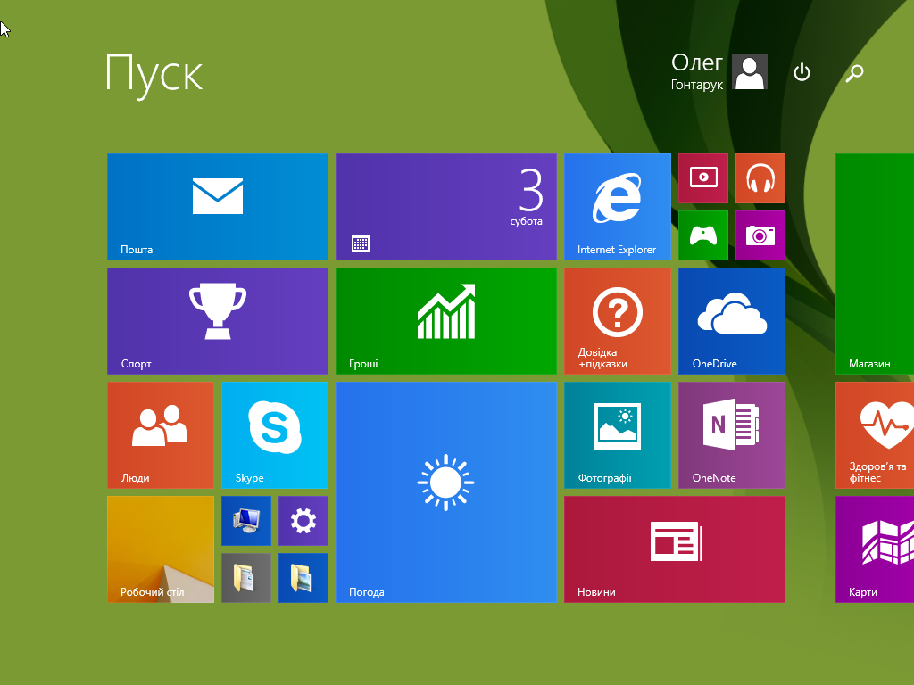

- I. Дати визначення поняттям:
- 1. BIOS, POST, and similar
- 2. ОС - це базовий комплекс програм, що виконує керування апаратною складовою комп'ютера або віртуальної машини; забезпечує керування обчислювальним процесом і організовує взаємодію з користувачем.
- 1.1 Віртуальна машина - модель обчислювальної машини, створеної шляхом віртуалізації обчислювальних ресурсів: процесора, оперативної пам'яті, пристроїв зберігання та вводу і виводу інформації
- 1.2Апаратне забезпечення – це обладнання, яке входить до складу комп’ютера (фізичні пристрої, за допомогою яких людина керує програмами і отримує інформацію від комп’ютера – клавіатура, миша, монітор тощо).
- 1.3Інтерфейс апаратного забезпечення
- 1.4Інтерфейс прикладного програмування
- 1.5Взаємодія між різними вузлами – це апаратний інтерфейс, між програмами – програмний інтерфейс, а між апаратурою і програмами – апаратно-програмний інтерфейс.
- 3.Апаратна незалежність
- 4.Процесор
- 5.Процес - об'єкт операційної системи, контейнер системних ресурсів, призначених для підтримки виконання програми. Коли в середовищі операційної системи запускається прикладна програма, система створює спеціальний об’єкт – процес, – який призначений для підтримки її виконання.
- 6.Потік - послідовність елементів даних, що стають доступними через якийсь час.
- 7.Серверна ОС - більше орієнтована на багатозадачність і паралельність
- 8.Серверна ОС - більше орієнтована на багатозадачність і паралельність
- 9.Вбудована ОС
- 10.Адресний простір - означає групу адрес, кожній з яких ставиться у відповідність, наприклад, мережевий хост, периферійний пристрій, сектор магнітного диска, блок даних на магнітній стрічці, комірка оперативної або постійної пам'яті, або ж інша логічна чи фізична сутність.
- II.Описати та провести аналіз деяких віртуальних машин(із скріншотами)
- III.Встановити та описати процес встановлення віртуальної машини на власний ПК (із скріншотами)
- IV.Встановити ОС Windows на віртуальну машину. Покроково описати процес встановлення (із скріншотами):
- 1.Завантажити та інсталювати Virtual Box
- 2.Створити нову віртуальну машину
- 3.Загрузити .iso образ системи
- 4.Пройти стандартну інсталяцію заповнивши всі необхідні поля
- Перевірити працездатність встановленої ОС. Вигляд меню "Пуск" встановленої ОС зображено на рисунку 1

III.Лабораторна Робота№3
IV.Лабораторна Робота№4
V.Лабораторна Робота№5
VI.Лабораторна Робота№6
VII.Лабораторна Робота№7
VIII.Лабораторна Робота№8